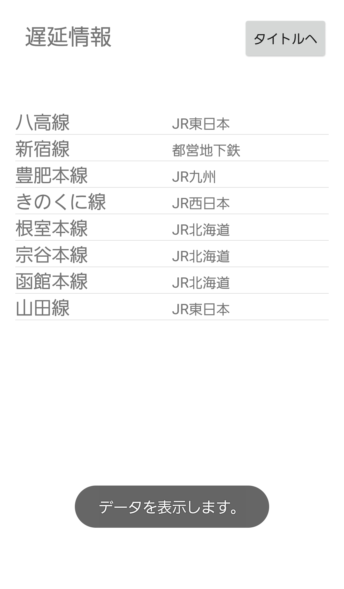
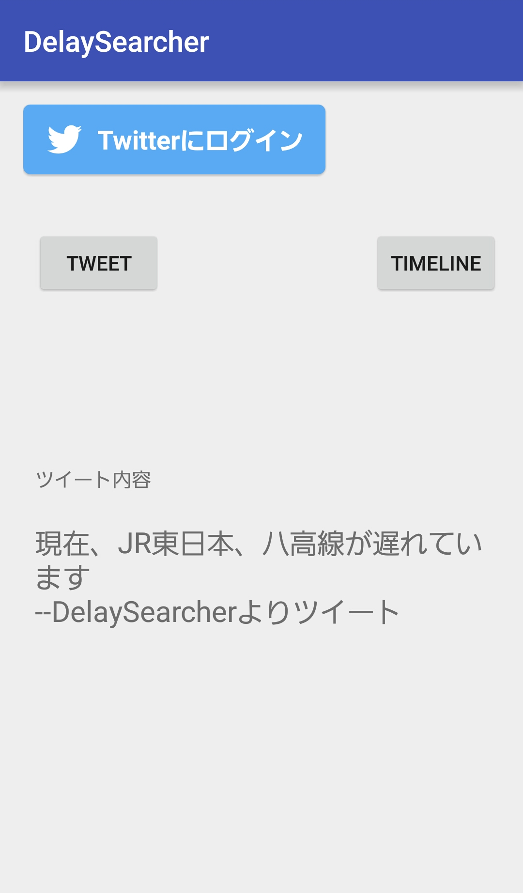
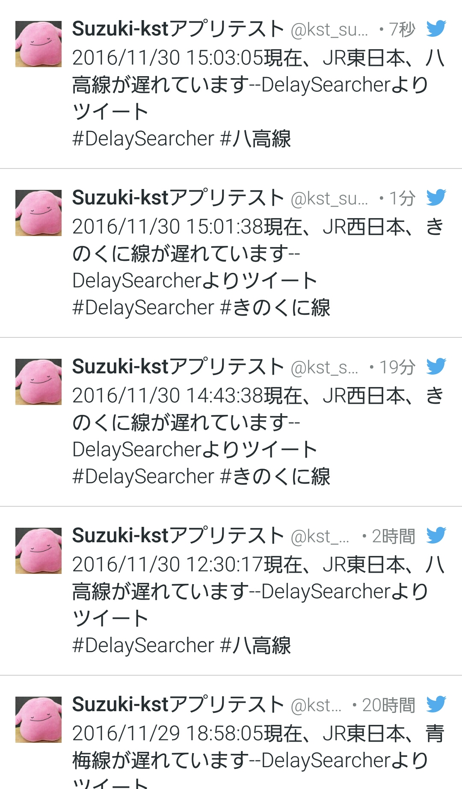

現在世の中に出回っている遅延情報は事故の発生時刻や事故の原因などの煩雑な要素が多く、 シンプルに「どの路線が遅延しているのか」に重きをおいた遅延情報が欲しいと思ったのがきっかけである。
その中で日常で使うことを想定した際に、Javaの勉強の一環でAndroidアプリケーション製作を選択肢、 開発環境単体でコーディング、デバッグが可能な公式開発環境Android Studioを選択した。
当時Twitterとの連携に興味を持っていたため、遅延情報をTwitterで投稿できるようにしたいと思い、ネットでいろいろ調べてみると、 アプリケーションとAndroidを紐付けするものとして有名なのはTwitter4Jだが、設定の手軽さを考えてTwitter社が提供している フレームワークであるFabric(現在はFirebaseに統合)を使うことにした。

アプリケーションを起動したときの最初のアクティビティ。WebAPIを叩いて得られたJSONファイルからパースを行って、 路線と会社名を取得してリストビューに表示する。データが表示できたらトーストを表示する。

リストビューの中で発信したい路線をタップすると、Twitter関連のアクティビティに遷移する。ここからTwitterアカウントの認証、ツイート画面への遷移、 TLを表示する機能(ツイート、TL表示は認証後使うことができる)を行える。

TLを表示した結果。
当時JSONファイルについての知識がほとんど無く、パースをするコード書くのに時間がかかった。
Androidのレイアウト部分であるXMLもほとんどIDEの自動補正に頼り切りであった。
路線名と会社名をそれぞれ別のリストビューに入れて表示しているのだが、IDE側で自動補正できなかったためアプリ側で処理を することになった。BaseAdapterを改造してリスト表示をするという手法をとったのだが、ネットの記事と友人の助言によって なんとか実装することができた。
2020/11/30現在では、遅延情報に取得したAPIのアドレスの変更と、FabricがFirebaseに統合したため現在は動作不可能となってしまっている為、 今後改良をしていきたい。
戻る